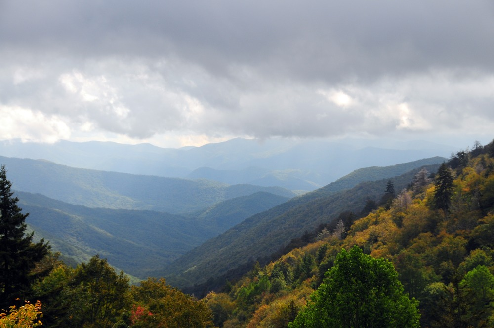

Trails, mountains, and places worth walking a little farther for.
VERSO L'ALTO
Hiking is more than reaching the summit. It is a chance to step away from the noise, challenge yourself, and discover something greater along the way.
Verso Alto brings together trails, mountains, and brotherhood for those who want to explore the outdoors while growing in faith and character.
Hiking is at the heart of Verso Alto. From short day hikes to demanding mountain routes, this is where we explore the trails and destinations that make getting outside worth it.
Tennessee & North Carolina
Great Smoky Mountains National Park is home to more than 800 miles of hiking trails. The park offers everything from shorter day hikes to strenuous mountain routes.
A popular hike featuring Arch Rock, forest scenery, and the dramatic Alum Cave Bluffs.
A challenging mountain hike with expansive views from one of the Smokies' highest peaks.
A rocky Appalachian Trail destination known for its high-elevation mountain views.

FEATURED TRAIL
One of the most memorable hikes in the Great Smoky Mountains, Mount Le Conte combines a challenging climb with incredible mountain scenery along the way.
BEFORE YOU GO
A good hike starts before you reach the trailhead. Check the weather, know your route, bring enough water, and make sure someone knows where you're going.
Check the distance, elevation, difficulty, and expected hiking time before you start.
Bring water, food, navigation, appropriate clothing, and the gear you need for the conditions.
Stay on designated trails, leave no trace, and help keep the mountains beautiful for others.
ON THE TRAIL
Small habits can make a big difference when you're spending a day in the mountains.
Give yourself plenty of daylight and time to enjoy the trail without rushing.
Bring enough water for the distance, weather, and difficulty of your hike.
Pack out what you bring in and leave the trail and surrounding areas as you found them.
Don't spend the entire hike focused on the trail. Take time to appreciate the mountains.
KEEP EXPLORING
The mountains are bigger than one trail. Discover new places, new challenges, and new views.
Rolling ridgelines, forest trails, and long-distance views across the Appalachian Mountains.
Explore the EastHigh alpine trails, dramatic peaks, and some of the most rugged landscapes in the country.
Explore the WestA legendary footpath stretching through fourteen states and thousands of miles of mountains.
Go FurtherVerso Alto means "toward the heights." Every trail is an opportunity to explore somewhere new, challenge yourself, and keep moving higher.